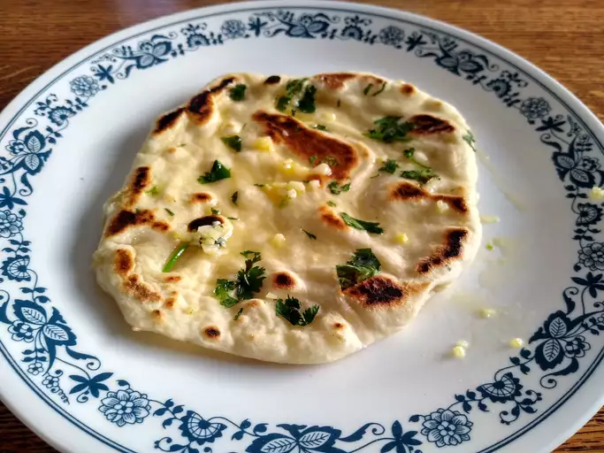

Garlic Naan

Description
Garlic Naan is a soft and fluffy Indian flatbread infused with the robust flavor of garlic, making it a delicious accompaniment to various Indian dishes.
Traditionally cooked in a tandoor (clay oven), this naan is brushed with garlic butter and sprinkled with fresh herbs like cilantro, adding an extra layer of aroma and taste.
Perfectly paired with rich curries, such as butter chicken, Shahi Paneer, or Dal Makhani, Garlic Naan is also great on its own as a flavorful snack.
The combination of a crisp exterior and a tender, chewy interior makes it a favorite in Indian cuisine. Enjoy the delectable taste of Garlic Naan to elevate your meal experience.
Ingredients
- ½ cup warm water, or more as needed
- 1 teaspoon white sugar
- 1 (.25 ounce) package active dry yeast
- ¼ cup butter
- 2 cloves garlic, minced
- 2 cups bread flour, or more as needed
- ¼ cup plain yogurt
- 1 teaspoon kosher salt
- ¼ cup chopped cilantro (Optional)
Steps
- Combine water, sugar, and yeast in a bowl. Let stand until yeast softens and forms a creamy foam, about 15 minutes.
- Heat butter in a pan over medium heat until melted and sizzling. Quickly mix in garlic and remove from the heat.
- Add bread flour, yogurt, salt, and 1 tablespoon garlic butter to yeast mixture; stir with a wooden spoon until a shaggy dough forms.
- Knead by hand until dough pulls away from the sides of the bowl, adding more water or flour as needed. Turn dough out onto the counter and continue kneading until it forms a smooth ball, 3 to 4 minutes.
- Place dough into a large bowl and drizzle a few spoons garlic butter over top. Cover and let rise until doubled in volume, about 2 hours.
- Punch dough down and turn out onto the counter. Shape into a rough rectangle and cut into 6 pieces. Roll each piece into a ball and lightly dust with flour.
- Cover with plastic wrap and proof until slightly puffy, 15 to 20 minutes.
- Preheat a cast iron skillet over medium heat until very hot, 5 to 10 minutes.
- Meanwhile, roll each piece proofed dough into a 1/8-inch-thick oval. Sprinkle some cilantro on top and press lightly to adhere.
- Working in batches, cook naan in the hot skillet until large bubbles form, 1 to 2 minutes. Flip, press gently, and continue to cook until bubbles on the bottom are charred, 2 to 3 minutes more.
- Brush naan with more garlic butter before serving.